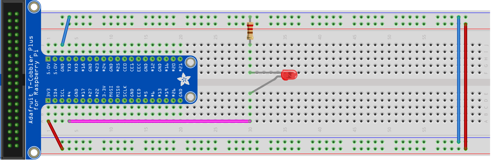
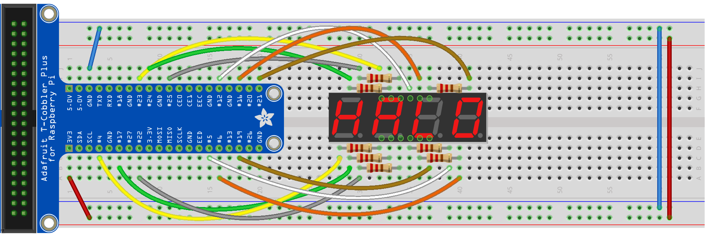

<div class="home">
    <h2>Teaching Material</h2>
    {% include toc.html html=content sanitize=true class="inline_toc"%}
    <h4 class="inline_toc">Complete notes</h4>
    <ul style="list-style-type: none; font-size:1.2em">
        <li><a href="./Notes/Pi_Workshop.pdf">Pi_Workshop.pdf</a></li>
        <li><a href="./Notes/Pi_Workshop.pptx">Pi_Workshop.pptx</a></li>
        <li><a href="./Notes/Pi_Workshop.key">Pi_Workshop.key</a></li>
    </ul>
    <h4 class="inline_toc">Curriculum</h4>
    <ul style="list-style-type: none; font-size:1.2em">
        <li><b>Run code on Pi</b></li>
        <li>Download code: <a href="./code/helloworld.py">helloworld.py</a></li>
        <br><br>
        <li><b>Basic Circuit</b></li>
        <li></li>
        <br><br>
        <li><b>LED</b></li>
        <li></li>
        <li>Download code: <a href="./code/led.py">led.py</a></li>
        <br><br>
        <li><b>LDR</b></li>
        <li></li>
        <li>Download code: <a href="./code/ldr.py">ldr.py</a></li>
        <li>Download code: <a href="./code/ldr2.py">ldr2.py</a></li>
        <br><br>
        <li><b>Switch</b></li>
        <li></li>
        <li>Download code: <a href="./code/switch.py">switch.py</a></li>
        <br><br>
        <li><b>Buzzer</b></li>
        <li></li>
        <li>Download code: <a href="./code/buzzer.py">buzzer.py</a></li>
        <br><br>
        <li><b>7 Segment</b></li>
        <li></li>
        <li>Download code: <a href="./code/display.py">display.py</a></li>
        <li>Download code: <a href="./code/sevenSeg.py">sevenSeg.py</a></li>
        <br><br>
        <li><b>4 Digit 7 Segment</b></li>
        <li></li>
        <li>Download code: <a href="./code/fourDigit.py">fourDigit.py</a></li>
        <br>
    </ul>
    <h4 class="inline_toc">Learing Resources</h4>
     <ul>
        <li>Getting started with the Raspberry Pi - <a href="https://projects.raspberrypi.org/en/projects/raspberry-pi-getting-started"> link</a></li>
        <li>Raspberry Pi curriculum - <a href="https://curriculum.raspberrypi.org/"> link</a></li>
        <li>LED - <a href="https://edisontechcenter.org/LED.html"> link</a><a href="https://www.youtube.com/watch?v=2_YS3DZQIbI"> link</a></li>
        <li>Resistor Color Coding - <a href="https://www.digikey.sg/en/resources/conversion-calculators/conversion-calculator-resistor-color-code-4-band"> link</a></li>
        <li>LDR - <a href="https://www.kitronik.co.uk/blog/how-an-ldr-light-dependent-resistor-works/"> link</a><a href="https://www.youtube.com/watch?v=ilN8XIK77dc"> link</a></li>
        <li>Push button / Switch - <a href="https://electronics.stackexchange.com/questions/75065/how-does-the-push-button-in-this-circuit-work"> link</a><a href="https://www.arduino.cc/en/tutorial/switch"> link</a></li>
        <li>Buzzer - <a href="https://www.cui.com/product-spotlight/piezo-and-magnetic-buzzers"> link</a><a href="https://www.youtube.com/watch?v=77h1JhD9Syw"> link</a></li>
        <li>7 seg - <a href="https://www.electronics-tutorials.ws/blog/7-segment-display-tutorial.html"> link</a><a href="https://www.youtube.com/watch?v=L1qN0iPeYqg"> link</a></li>
        <li>4 digit 7 seg - <a href="https://raspi.tv/2015/how-to-drive-a-7-segment-display-directly-on-raspberry-pi-in-python"> link</a><a href="https://www.youtube.com/watch?v=256VQ6eVNng"> link</a></li>
        <li>Prototype schema software: fritzing - <a href="http://fritzing.org/home/"> link</a></li>
    </ul>
</div>